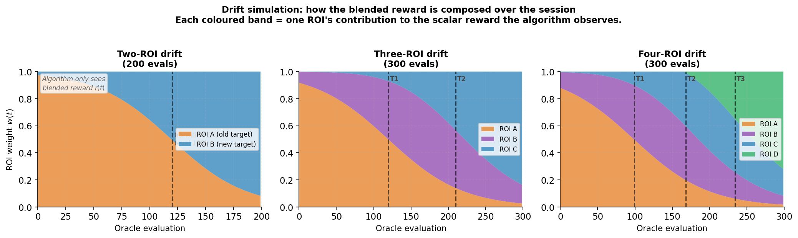

3.1 Search Space and Base Algorithm
The search space and base algorithm follow an approach developed in ongoing work
in our lab. We search a structured text prompt space of approximately
$10^{23}$ candidates, where each candidate is a tuple of indices across 17 semantic
dimensions decoded into a natural language prompt and rendered by SDXL-Turbo. A BERG
fMRI encoding model scores each rendered image, serving as the oracle. Because
querying the oracle for every candidate is infeasible, we use a CLIP text surrogate,
a Ridge ensemble trained on observed (prompt, score) pairs, to filter the search:
1000 candidates are bred and scored by the surrogate each generation, and only the
top 20 by acquisition score are sent to the oracle.
Drift is simulated by blending the rewards of multiple ROIs using a chain of sigmoid
transitions. For $N$ ROIs with $N-1$ transition midpoints
$m_1 < m_2 < \cdots < m_{N-1}$, we define
$s_i(t) = \sigma\!\left(k\!\left(\tfrac{t}{T} - m_i\right)\right)$
with $k = 6$ throughout, and assign weights
\[
w_1(t) = 1 - s_1, \quad
w_i(t) = s_{i-1}\,(1 - s_i) \text{ for } 1 < i < N, \quad
w_N(t) = s_{N-1}.
\]
The blended reward is $r(t) = \sum_{i=1}^{N} w_i(t)\,\tilde{r}_i$,
where $\tilde{r}_i$ is the normalised score for ROI $i$.
Transition midpoints are set to $m = 0.60$ for two-ROI sequences (200 evals),
$(m_1, m_2) = (0.40, 0.70)$ for three-ROI sequences (300 evals), and
$(m_1, m_2, m_3) = (0.33, 0.56, 0.78)$ for four-ROI sequences (300 evals).
The individual ROI scores are never revealed; the algorithm observes only
the blended scalar $r(t)$.

The drift simulation across our three experimental conditions. Each coloured
band shows one ROI's contribution to the blended scalar reward the algorithm
observes. The two-ROI condition has a single transition at eval 120 (out of
200); the three-ROI condition transitions at evals 120 and 210 (out of 300);
and the four-ROI condition transitions at evals 99, 168, and 234 (out of 300).
3.2 Recency Windowing
Without drift awareness, the surrogate accumulates the full session history and
anchors the search to the pre-drift landscape. We address this by restricting
surrogate training to the $W_s$ most recently evaluated prompts and elite selection
to the $W_e$ most recent candidates, so that stale observations from an earlier
target region do not dominate the surrogate's fit. Both windows are coupled so that
the candidates used for breeding are always drawn from the same recency horizon as
the surrogate's training data. $W_s$ is initialised to the full session length,
making the algorithm effectively stateless at the start, and is subsequently
controlled by the adaptive window controller described in Section 3.4.
3.3 State-Conditioned Surrogate
Recency windowing limits how much stale history the surrogate sees, but it cannot
distinguish between a reward that is rising because the search is improving and one
that is declining because the target has shifted. To give the surrogate access to
this context, we augment each training point's CLIP text embedding with a
three-dimensional session state descriptor:
\[
\mathbf{s} = \bigl[\,\mu,\;\dot{r},\;\sigma^2\,\bigr]
\]
where $\mu$, $\dot{r}$, and $\sigma^2$ are the mean, slope, and variance of the
blended reward over the most recent 20 evaluations at the time that training point
was collected. The surrogate learns $\hat{r} = f(\mathbf{x}, \mathbf{s})$,
conditioning predictions on both image content and current session dynamics. At
inference time, each candidate in the pool is augmented with the state descriptor
at the current evaluation index before scoring.
3.4 Adaptive Window Controller
The recency window $W_s$ is controlled by a per-generation drift detector operating
entirely on the blended reward signal. After each generation, the controller
maintains a rolling buffer of the last $B = 5$ generation means and computes:
\[
\text{drift_score} = \frac{-\,\text{slope}(\bar{g}_{t-B:t})}
{\text{var}(\bar{g}_{t-B:t}) + \varepsilon}
\]
This quantity is large when the reward is declining quietly, negative slope with
low variance, which is the characteristic signature of a high-correlation free ride
ending. It remains low when the reward drops sharply and noisily, the anti-correlated
case, which is handled by the slope trigger described below.
When the drift score exceeds $\tau = 0.2$, the window shrinks:
$W_s \leftarrow \max(W_{\min},\; W_s \times 0.6)$, and an explorer injection is
forced to introduce candidates from distant regions of the prompt space. When the
score remains below zero for three consecutive generations, the window grows back:
$W_s \leftarrow \min(W_{\max},\; W_s \times 1.15)$. The controller is initialised
at $W_s = W_{\max} = 100$ and the floor is $W_{\min} = 20$.
A secondary slope trigger fires when the linear slope over the last 20 evaluations
falls below $-0.005$, injecting candidates from the most distant CLIP-PCA clusters
relative to already-evaluated prompts. The two mechanisms are complementary: the
window controller handles smooth correlated drift by adjusting surrogate memory,
while the slope trigger handles sharp stagnation by diversifying the candidate pool.
3.5 TODO Elies